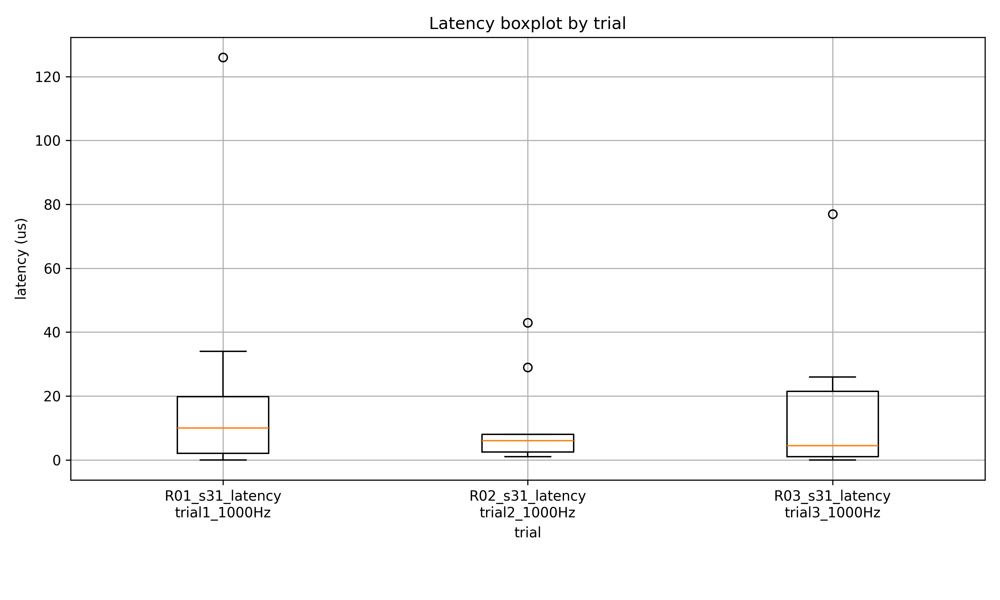
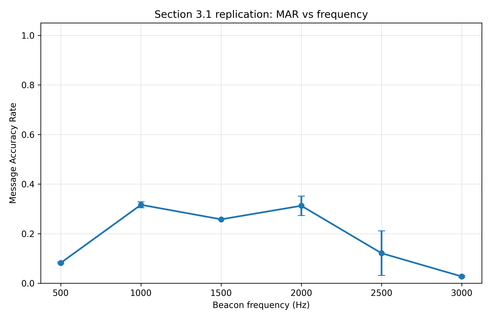
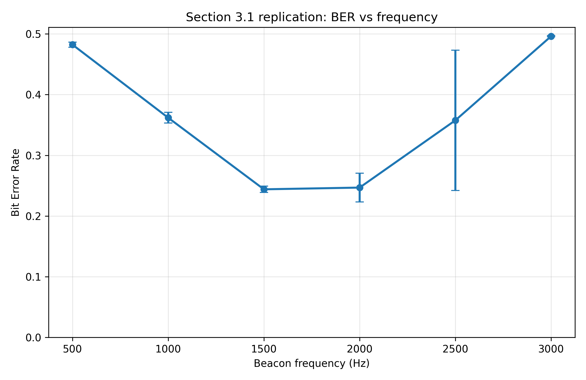
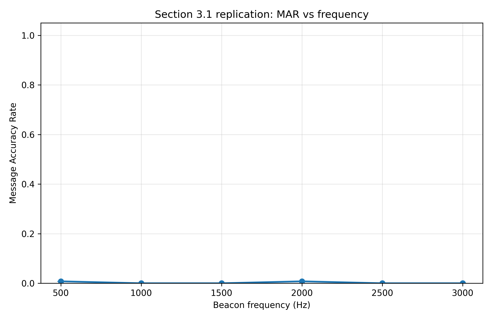

ECE 195 Winter Quarter Writeup
Introduction
Visible light communication (VLC) is emerging as a low-cost, low-interference alternative to radio frequency communication for indoor Internet of Things (IoT) and robotics. Current VLC receivers, especially photodiodes and rolling-shutter cameras, can consume significant power, struggle with fast modulation, and degrade under changing ambient lighting. Event-driven cameras may address several of these limitations, but their usefulness as VLC receivers remains underexplored.
Unlike conventional cameras, event-driven cameras record only changes in brightness instead of full image frames. By ignoring static visual information, they can react to light changes almost instantly and often with lower sensing overhead. These properties make them promising receivers for VLC, where LEDs communicate by rapidly modulating their brightness. This project studies whether event-driven cameras can decode VLC signals from blinking LEDs and whether they offer advantages over traditional cameras in latency, robustness to lighting variation, and eventually energy per bit and bit error rate.
During this quarter, the work centered on baseline characterization of the EVK4 event camera before moving on to full OOK and CSK evaluation. The goal was to determine whether the sensor could reliably capture microsecond-scale optical transitions, remain usable under changing room illumination, and provide a repeatable experimental workflow that could support the rest of the thesis.
Background
VLC enables wireless data transmission through rapid modulation of LED brightness, offering a low-cost and interference-free alternative to RF systems. Prior studies have shown that event-based optical sensors can decode OOK-based VLC by responding to abrupt brightness transitions, but much of that literature still focuses on controlled conditions and does not fully characterize how these sensors behave under realistic lighting variation.
Most current VLC receivers rely on photodiodes or frame-based CMOS cameras. Those receivers generally require continuous sampling or frame capture and therefore carry higher sensing overhead. Event-driven cameras differ because their pixels independently report brightness changes with microsecond timing resolution, which suggests that they may be especially well suited to rapid, sparse, low-latency optical communication.
The remaining research gap is not only whether event-driven sensors can decode OOK reliably, but whether they can remain robust under different lux levels and whether they can eventually support more advanced schemes such as color shift keying (CSK). This quarter focused on the Section 3.1 baseline experiments needed to answer those questions in an effective way before beginning the energy study in Section 3.2 and the CSK study in Section 3.4.
Planned Work for Section 3.1
The planned work for Section 3.1 was to characterize the intrinsic timing precision and responsiveness of the EVK4 event camera under controlled optical conditions before moving on to full VLC evaluation. In the proposal, this baseline phase included four main tasks: measuring latency from controlled brightness transitions, examining inter-event timing behavior, determining the minimum detectable pulse width, and measuring event density and signal-to-noise behavior under different illumination levels. The purpose of this stage was to establish whether the camera could capture short transitions consistently enough to support later OOK and CSK experiments.
What Was Actually Accomplished
The strongest quarter-one outcome was that the EVK4 baseline pipeline is now reproducible. The repository now contains reusable analysis scripts for latency, inter-event timing, illumination sweeps, pulse-width sweeps, and camera-bias sweeps, and those scripts produce repeatable CSV summaries and plots instead of one-off manual inspection notes.
For timing responsiveness, three corrected baseline latency trials were completed in the section3_1_1000Hz capture set and reanalyzed with the repository latency pipeline. An earlier 30-pulse interpretation was archived after it became clear that the recording window did not actually contain all 30 expected pulses, which artificially reduced the detection rate. After correcting the schedule to the 10 pulses that were truly present in the capture window, the final baseline summary detected all 30 out of 30 pulses across the three trials. The pooled result was a mean first-event latency of 16.1 microseconds, a median latency of 6.5 microseconds, a 95th-percentile latency of 61.7 microseconds, and a worst case of 126.0 microseconds. Figure 1 and Table 1 summarize that corrected result.

| Metric | Value |
|---|---|
| Trials analyzed | 3 |
| Total scheduled pulses | 30 |
| Total detected pulses | 30 |
| Detection fraction | 1.00 |
| Mean first-event latency | 16.1 us |
| Median latency | 6.5 us |
| 95th-percentile latency | 61.7 us |
| Worst-case latency | 126.0 us |
Inter-event timing behavior was then analyzed on those same corrected 1000 Hz baseline captures to characterize how densely the EVK4 responded once a pulse was detected. For each of the 30 detected pulses, the analysis measured consecutive event spacing within a fixed 250 us window after the first detected event. All 30 pulses produced analyzable event bursts in that window. Pooled across the three trials, the mean burst contained 38.8 events over an average duration of 236.0 us, with a median inter-event interval of 3.0 us and a 95th-percentile interval of 19.3 us. Figure 2 summarizes the overall inter-event interval distribution and shows that the baseline response was not only prompt, but also temporally dense after each edge.

For minimum detectable pulse width, the initial sweep at 1.00 ms, 0.75 ms, 0.50 ms, and 0.25 ms achieved full detection across all 120 scheduled pulses. A second sweep then extended the study to 0.20 ms, 0.15 ms, 0.10 ms, and 0.05 ms, again with 30 out of 30 detections at every tested setting. After the March 16 and March 18 follow-up work, the sweep was pushed further to 0.04 ms, 0.03 ms, 0.02 ms, and 0.01 ms; those runs also produced full detection, with 20 out of 20 detections at every setting. As of March 18, 2026, every tested pulse width from 1.00 ms down to 0.01 ms was detected successfully, giving 320 detections out of 320 scheduled pulses across the combined sweeps. The practical lower bound improved from the originally reported 50 us to 10 us, and the true failure point still was not reached. Table 2 shows the combined pulse-width summary.
| Pulse width (ms) | Trials | Detected / scheduled | Detection fraction | Mean latency (us) | 95th percentile (us) |
|---|---|---|---|---|---|
| 1.00 | 3 | 30 / 30 | 1.00 | 82.8 | 280.0 |
| 0.75 | 3 | 30 / 30 | 1.00 | 42.6 | 160.7 |
| 0.50 | 3 | 30 / 30 | 1.00 | 56.1 | 290.0 |
| 0.25 | 3 | 30 / 30 | 1.00 | 72.8 | 211.8 |
| 0.20 | 3 | 30 / 30 | 1.00 | 75.4 | 208.6 |
| 0.15 | 3 | 30 / 30 | 1.00 | 54.9 | 151.5 |
| 0.10 | 3 | 30 / 30 | 1.00 | 72.6 | 232.0 |
| 0.05 | 3 | 30 / 30 | 1.00 | 71.9 | 175.0 |
| 0.04 | 2 | 20 / 20 | 1.00 | 75.8 | 265.8 |
| 0.03 | 2 | 20 / 20 | 1.00 | 71.1 | 152.5 |
| 0.02 | 2 | 20 / 20 | 1.00 | 77.6 | 290.0 |
| 0.01 | 2 | 20 / 20 | 1.00 | 121.5 | 364.0 |
The 0.01 ms through 0.04 ms results were added after the initial report draft. They materially strengthen the baseline claim because they show that the EVK4 still responds reliably at 10 us under the controlled setup used this quarter.
For illumination sensitivity, a lux sweep was completed at 0, 62, 300, and 512 lux with three trials at each lighting level. Those experiments generated event-rate, noise-rate, and SNR summaries. Across all four ambient-light conditions, the transmitted signal remained strongly separated from the background according to the current SNR proxy. Mean SNR z-score values ranged from about 6.5e3 to 1.03e4, which indicates that the camera continued to produce a strong signal-driven event response even as room lighting changed substantially. Figure 3 and Table 3 summarize the illumination result.

| Lux | Trials | Signal rate mean (events/s) | Noise rate mean (events/s) | SNR z-score mean |
|---|---|---|---|---|
| 0 | 3 | 20,334,653.93 | 7,412.37 | 6,576.19 |
| 62 | 3 | 71,656,193.48 | 65,834.00 | 8,598.24 |
| 300 | 3 | 44,155,137.75 | 39,051.00 | 6,543.89 |
| 512 | 3 | 61,101,515.92 | 23,783.52 | 10,293.55 |
In addition to those core Section 3.1 experiments, the quarter also included bias tuning for bias_fo, bias_refr, and bias_diff. Those sweeps now have dedicated analysis scripts, CSV outputs, and plots in the repository. Although bias tuning was support work rather than the primary deliverable of Section 3.1, it improved event-stream quality and helped establish repeatable camera settings for later VLC experiments.
GitHub Commit Log for This Quarter
Each title below links directly to the GitHub commit. The list is ordered chronologically and documents the repository work underlying the experiments summarized above.
February 2026
- 2026-02-18 - Initial thesis code - Added the first working event-camera VLC codebase to the repository.
- 2026-02-18 - Allowing .csv files in GitHub - Updated tracking rules so experiment outputs could be versioned with the analysis.
- 2026-02-20 - New analyzing code, plots folder, .vscode. Added test data - Added the first round of analysis scripts, plot storage, and sample data.
- 2026-02-20 - updated file names - Standardized filenames so the analysis outputs were easier to manage.
- 2026-02-21 - removed analyze_metrics2.py - Removed an obsolete analysis file after the pipeline was reorganized.
- 2026-02-23 - new data and plots - Added newly generated experiment outputs to the repo.
- 2026-02-23 - new bias_diff test code for the EVK4 - Introduced the first dedicated script for the
bias_diffsweep. - 2026-02-23 - finished testing bias diff for EVK4 - Added completed
bias_diffresults after running the sweep. - 2026-02-23 - added last two bias tests to src, testing later - Added the remaining bias-test source files needed to finish calibration work.
- 2026-02-24 - Modified bias_fo and bias_refr to enter correct folders for .raw files - Fixed path handling so the bias-analysis scripts found the correct captures.
- 2026-02-24 - added senior thesis proposal - Added the proposal document used to anchor the quarter plan.
- 2026-02-25 - modified bias_refr_analyze to correctly save plots and data - Fixed output saving for the
bias_refranalysis path. - 2026-02-25 - modified code to save CSV and plots correctly - Improved the shared output pipeline so generated data and plots landed in the right locations.
- 2026-02-26 - modified both refr and fo analyze files, refr needed to have a cap on events, pc ran out of ram :( - Added guardrails to the bias-analysis scripts after one path grew too large in memory.
- 2026-02-26 - finished testing bias settings - Added the completed bias-parameter sweeps used for camera calibration.
- 2026-02-26 - small modifications to file names - Cleaned up remaining naming inconsistencies in the stored outputs.
March 2026
- 2026-03-01 - added latency_analyze, organized bias testing files - Added the reusable latency-analysis workflow and reorganized the bias outputs.
- 2026-03-01 - finished latency trials - Added the completed latency captures used for Section 3.1 baseline timing.
- 2026-03-01 - fixed latency boxplot - Corrected the latency visualization so the baseline plot rendered properly.
- 2026-03-03 - code for lux sweep analyzing added - Added the analysis workflow for the illumination-sensitivity experiments.
- 2026-03-04 - created disaster plan in README.md and moved camera settings to repo - Documented recovery steps and moved camera settings into version control.
- 2026-03-04 - README edits - Refined the repository instructions during the pipeline setup stage.
- 2026-03-04 - Update README with clearer cloning instructions - Improved repo onboarding so the workflow could be reproduced more easily.
- 2026-03-05 - completed pulse width sweeps and modified gitignore - Added the first pulse-width sweep results and updated output tracking.
- 2026-03-05 - corrected pulse width sweeps - Corrected the stored pulse-width results after identifying issues in the earlier run.
- 2026-03-09 - lux sweeps completed - Added the completed lux-sweep data and plots used in the illumination summary.
- 2026-03-10 - Added experiment replication file - Added the benchmark-replication planning document for the next experiment stage.
- 2026-03-11 - latency results modified - Updated the latency outputs after refining the baseline analysis.
- 2026-03-11 - added transmitter code to repo - Added the transmitter-side code needed to coordinate later VLC tests.
- 2026-03-15 - Update README with clearer setup instructions - Clarified the setup path so the experiment environment could be recreated more reliably.
- 2026-03-16 - modified led transmitter behavior code - Tuned the transmitter behavior to support shorter pulse-width experiments.
- 2026-03-16 - min det. pulse width trials again, evk4 still beat tests - Added a new pulse-width sweep showing that the EVK4 still did not fail at the tested bound.
- 2026-03-16 - new min pulse width tests - Added another round of minimum detectable pulse-width experiments.
- 2026-03-16 - fixed bug causing led to go strobe light mode - Corrected a transmitter bug that interfered with short-pulse testing.
- 2026-03-16 - 0.20 to 0.05 min pulse width tests - Added the successful 0.20 ms through 0.05 ms pulse-width sweep.
- 2026-03-18 - sub 0.05ms pulse width test mods - Modified the workflow to support pulse-width experiments below 0.05 ms.
- 2026-03-18 - 0.04ms to 0.01ms min det pulse width tests - Added the 40 us through 10 us sweep that extended the baseline lower bound.
- 2026-03-18 - new transmitter mods for 0.005ms and 0.001ms min det P.W. tests - Prepared the transmitter for even shorter pulse-width experiments that can continue next quarter.
- 2026-03-18 - done w min detectable pulse width tests - Closed out the quarter's minimum pulse-width testing pass and stored the outputs.
- 2026-03-23 - plot and data orginization - Organized the generated plots and CSV summaries for easier reporting and review.
Remaining Work Entering Spring 2026
As of March 23, 2026, the major remaining baseline objective is no longer to prove that sub-50 us pulse width sensing is possible, since reliable detection was demonstrated down to 10 us. The next step is to determine the true failure point of the EVK4 under the controlled setup, but further characterization below 10 us was limited this quarter by instability in the LED transmitter setup.
At the time of the March 23, 2026 draft, the benchmark replication from Section 3.1 was still outstanding. That work was later completed in Spring 2026 and is summarized in the addendum below. The remaining replication problem is no longer basic pipeline construction; it is validating whether the improved April 3, 2026 setup can be reproduced across independent capture sessions.
With the replication pipeline now in place, the next thesis directions are clearer. Section 3.2 should begin instrumented power measurements so that sensing energy, host-side compute cost, and total energy per bit can be quantified under matched OOK settings. Section 3.4 should move the existing RGB transmitter groundwork into real CSK experiments by collecting event-camera captures, building the corresponding decoding pipeline, and reporting symbol accuracy or BER under those multicolor transmissions.
Spring 2026 Addendum: Section 3.1 Benchmark Replication
This section was added after the original winter-quarter deadline to close the benchmark-replication task that was still open as of March 23, 2026.
The finished replication experiment used a fixed 11-bit truth sequence, 10110010110, transmitted 128 times per trial with 20 guard bits between messages. The transmitter was swept at requested frequencies of 500, 1000, 1500, 2000, 2500, and 3000 Hz, with two trials collected at each frequency. The final reported analysis used the corrected calibration pipeline to cap each active window to the known manifest duration and a locked hybrid decoder that used transition decoding at 500 to 1000 Hz and activity decoding with 15 us bins at 1500 to 2500 Hz. The 3000 Hz point was retained in the plots and tables, but it is explicitly treated as an unreliable high-frequency point.
Under the improved April 3, 2026 patch130 capture set, the EVK4 produced its strongest pooled message-accuracy results at 1000 Hz and 2000 Hz, reaching pooled MAR values of 0.316 and 0.313 respectively. The 1500 Hz point remained positive at 0.258 MAR, 2500 Hz dropped to 0.121 MAR, and 3000 Hz collapsed to 0.027 MAR. In BER terms, the lowest pooled error rates occurred in the 1500 to 2000 Hz range, where pooled BER was approximately 0.244 to 0.247. Table 4 and Figures 4 and 5 summarize those final patch130 results.
| Frequency (Hz) | Decoder used | Correct / total messages | Pooled MAR | Pooled BER | Interpretation |
|---|---|---|---|---|---|
| 500 | Transition | 21 / 256 | 0.082 | 0.482 | Weak but above zero |
| 1000 | Transition | 81 / 256 | 0.316 | 0.362 | Strongest low-rate result |
| 1500 | Activity, 15 us bins | 66 / 256 | 0.258 | 0.244 | Moderately successful |
| 2000 | Activity, 15 us bins | 80 / 256 | 0.313 | 0.247 | Best mid-band result |
| 2500 | Activity, 15 us bins | 31 / 256 | 0.121 | 0.358 | Degraded and inconsistent |
| 3000 | Activity, 15 us bins | 7 / 256 | 0.027 | 0.496 | Unreliable high-frequency point |


To check whether that hybrid decoder rule generalized beyond the tuning set, the same frozen pipeline was then run on an untouched holdout subset from the March 26, 2026 capture session. That validation largely failed. Pooled MAR fell to 0.008 at 500 Hz, 0.000 at 1000, 1500, 2500, and 3000 Hz, and only 0.008 at 2000 Hz. The corresponding BER values stayed near 0.46 to 0.51 across the sweep. Table 5 and Figure 6 summarize the gap between the stronger April 3, 2026 patch130 session and the older March 26, 2026 holdout session.
| Frequency (Hz) | Patch130 pooled MAR | Holdout pooled MAR | Patch130 pooled BER | Holdout pooled BER |
|---|---|---|---|---|
| 500 | 0.082 | 0.008 | 0.482 | 0.478 |
| 1000 | 0.316 | 0.000 | 0.362 | 0.464 |
| 1500 | 0.258 | 0.000 | 0.244 | 0.466 |
| 2000 | 0.313 | 0.008 | 0.247 | 0.512 |
| 2500 | 0.121 | 0.000 | 0.358 | 0.486 |
| 3000 | 0.027 | 0.000 | 0.496 | 0.479 |

The fairest conclusion is therefore that Section 3.1 benchmark replication was achieved only partially and in a setup-sensitive way. The April 3, 2026 patch130 session shows that the EVK4 can decode the known message sequence through about 2000 Hz under improved conditions, with degraded performance at 2500 Hz and unreliable performance at 3000 Hz. However, the March 26, 2026 holdout results show that this claim does not yet generalize across sessions. Because ROI placement and bias settings were similar between those sessions while the April 3, 2026 captures showed much cleaner periodic structure at the transmitted rate, the remaining uncertainty now appears to be physical setup quality rather than missing analysis code. As entered into this report, the replication result should therefore be interpreted as a setup-dependent partial replication rather than a fully validated reproduction of the published benchmark.